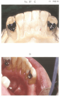
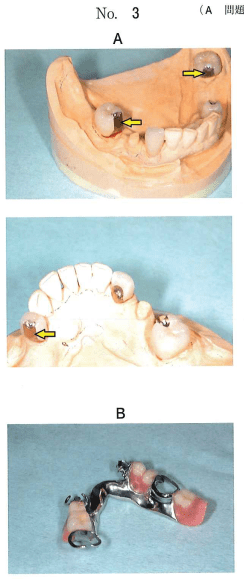
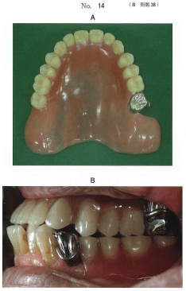
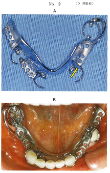
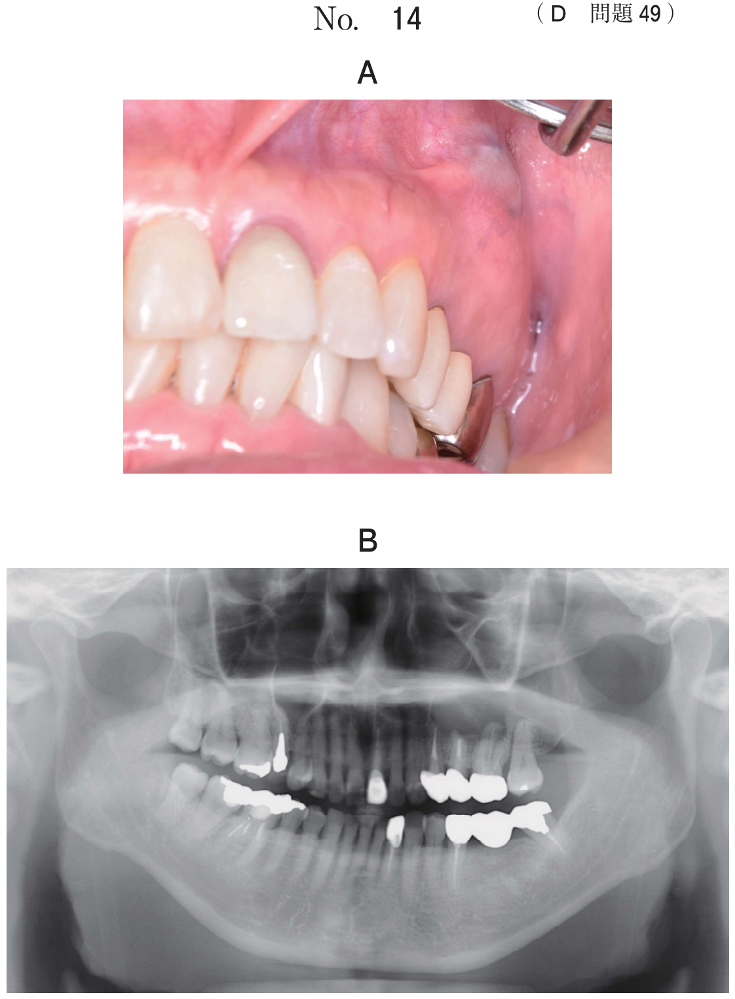

その他の構成装置
義歯床
欠損部顎堤や口蓋部を覆い、人工歯が排列される部分。
義歯床の役割
- 人工歯の保持
- 咬合圧の顎堤への伝達（支持）
- 義歯の安定（把持）
- 維持（粘膜支持型では重要）
義歯床各部の名称
- 粘膜面：顎堤粘膜に接する部分（印象面）
- 研磨面：口腔周囲の筋が義歯に力を及ぼす面（筋圧面）
- 床縁：粘膜面と研磨面の移行部
維持格子
義歯床内に埋め込まれる金属の格子状構造。レジンとの機械的維持を得る。
- レジン床と金属床の結合を強化
- 義歯床の補強
フィニッシュライン
義歯表面に見られるレジン部と金属部との接合境界線。
- 外フィニッシュライン：研磨面に現れる
- 内フィニッシュライン：粘膜面に現れる
内外のフィニッシュラインは1mm以上ずらして設定（応力集中防止）。
金属床の歯槽部の構造
| タイプ | 特徴 |
|---|---|
| 全面金属型 | 金属が顎堤粘膜全面に接する。中間欠損に用いられる。 |
| 一部レジン型 | 床縁だけがレジン。顎堤変化に対応しやすい。 |
| 一部金属型 | 粘膜面の大部分がレジン。上顎に多い。 |
| 全面レジン型 | 下顎遊離端欠損に用いられる。将来のリベース・リラインに対応。 |
アンレーレスト
支台歯の咬合面を広く覆うレスト。支持と審美性の確保に優れる。
- 支台歯の補強効果
- 咬合挙上が可能
- 咬合平面の修正が可能
ガイドプレーン（誘導面）
支台歯に形成された平行な面。義歯の着脱方向を規制し、把持作用に寄与。
- 着脱の誘導
- 回転の防止
- 横揺れの抑制
- 維持の向上：含まない（把持であり維持ではない）
- 回転の防止
- 着脱の誘導
- 横揺れの抑制
過去問
75歳の男性。咀嚼障害を主訴として来院した。初診時の口腔内写真（別冊No.27A、 B）と下顎義歯製作中の写真（別冊No.27C、D）とを別に示す。
写真に示す処置の目的はどれか。2つ選べ。

b 維持の向上
c 審美性の確保
d 支台歯の補強
e リンガルバーの補強
【解説】写真はアンレーレストの製作。支持の向上と審美性の確保（金属クラスプを使わない）が目的。
装着前の陶材焼付金属冠（別冊No.3A）と可撤性部分床義歯（別冊No.3B）を別に示す。
矢印で示す歯冠軸面と、それに対応するメタルフレーム構成要素で発揮する機能でないのはどれか。1つ選べ。

b 支持力の向上
c 把持力の向上
d 着脱方向の規制
e 連結強度の向上
【解説】矢印はガイドプレーン（誘導面）と隣接面板。把持・着脱規制・連結強度には寄与するが、支持力の向上には関与しない。支持はレストが担う。
上顎左側第二大臼歯にある装置を付与した義歯の写真（別冊No.14A）と装着時の口腔内写真（別冊No.14B）を別に示す。
この装置の目的はどれか。2つ選べ。

b 緩圧効果の増大
c 義歯の破折防止
d 咬合平面の修正
e 呼吸機能の改善
【解説】写真はアンレーレスト（オクルーザルレスト）。咬合の挙上と咬合平面の修正が可能。
下顎部分床義歯の製作過程の写真（別冊No.9A）と試適時の口腔内写真（別冊No.9B）を別に示す。
矢印で示す部位の作用はどれか。2つ選べ。

b 沈下の防止
c 動揺の抑制
d 破折の防止
e 着脱方向の規制
【解説】矢印は隣接面板（ガイドプレーン）。動揺の抑制（把持作用）と着脱方向の規制に寄与。沈下防止はレストが担う。
65歳の女性。上顎左側臼歯部欠損による咀嚼困難を主訴として来院した。診察の結果、上顎部分床義歯を製作することとした。義歯製作中のある過程の写真（別冊No.24A）と完成した義歯の写真（別冊No.24B）を別に示す。
矢印で示す部位に共通するのはどれか。3つ選べ。


b 回転の防止
c 支持の増大
d 着脱の誘導
e 横揺れの抑制
【解説】矢印はガイドプレーン。回転の防止、着脱の誘導、横揺れの抑制に寄与。維持・支持には直接関与しない。